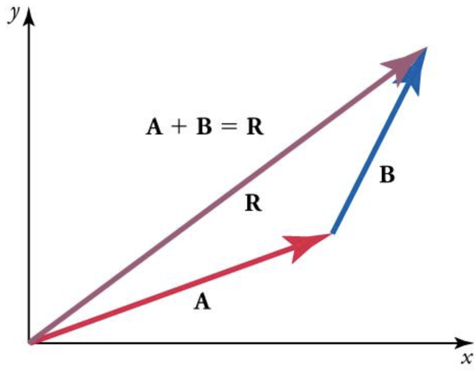
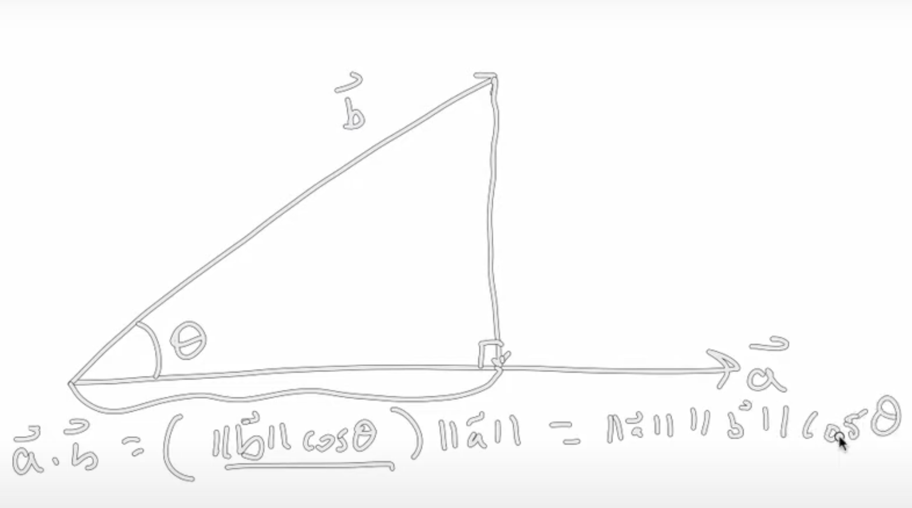

Vector Algebra
Lesson 4.2, Maths for Political Science
Table of Contents
Addition of Vectors
Lest lesson on the Basics of Vectors, we were introduced to vectors. Now, we will be performing operations on these vectors.
Addition (also subtraction) are the simplest operations for vectors.
Let us try to find the sum of vectors: \(\overrightarrow{a} + \overrightarrow{b}\)
Let us say \(\overrightarrow{a} = (1, 2)\)
Let us say \(\overrightarrow{b} = (2,1)\)
To add vectors, we add each corresponding component:
For example, we first add the first component of \(\overrightarrow{a}\) and \(\overrightarrow{b}\) , which is \(1+2\)
Then we add the second component of of \(\overrightarrow{a}\) and \(\overrightarrow{b}\) , which is \(2+1\)
If the vectors in question have more components, you just add the corresponding positions together (3rd element is added to the 3rd element, 4th to the 4th, etc).
Thus the sum of vectors \(\overrightarrow{a}\) and \(\overrightarrow{b}\) is simply \((1+2, 2+1)\) or \((3,3)\)
Or more generally, if we are trying to find the vector \(\overrightarrow{z}\) that is the sum of \(\overrightarrow{x}\) and \(\overrightarrow{y}\):
\[ \overrightarrow{z} = \overrightarrow{x} + \overrightarrow{y} \]
The resulting summed vector would be each component of \(\overrightarrow{x}\) and \(\overrightarrow{y}\) added:
\[
\overrightarrow{z} = (x_1 + y_1, x_2 + y_2,..., x_n + y_n)
\]
NOTE: You cannot add vectors with different dimensions (different amount of components).
- Because you will have some components of the longer left vector left off.
Subtraction
Subtraction is the same - just add with negative numbers.
For example, take the same vectors as before, but instead, we want to find \(\overrightarrow{a} - \overrightarrow{b}\)
We would simply subtract the corresponding components.
Thus, we would get \((1-2, 2-1)\), resulting in \((-1, 1)\)
Graphical Visualisation
To visualize addition of vectors graphically, we can do the following:
- Draw both vectors (see Basics of Linear Algebra for how to do this)
- Move the second vector, from its tail at the origin \((0,0)\), to the head of the first vector. Keep the shape and distance of the second vector.
- Now, the point from the head of the second vector, straight to the origin \((0,0)\), is the sum vector (the resulting vector from addition).

Scalar Multiplication
Scalar multiplication is when we multiply a vector by a scalar (see Basics of Vectors for a refresher):
Remember, a vector is a combination of scalars
A scalar is a single component/element, like a single number.
Let us try to find the product of the vector \(\overrightarrow{a}\) and scalar \(c\):
Where \(\overrightarrow{a}\) is the 2 dimensional vector \((1, 2)\)
And \(c\) is the scalar number \(4\)
To do a scalar times a vector, we take every component of the vector, and multiply it by the scalar
For example, the first component of \(\overrightarrow{a}\) is \(1\), so we multiply it by the scalar of \(4\) to get \(4\)
Then, we take the second component of \(\overrightarrow{a}, 2\), and multiply it by the scalar of \(4\) to get \(8\)
Our resulting vector is thus \((1*4, 2*4)\), or \((4, 8)\)
The same is with negative numbers - just multiply each component of the vector with the scalar.
So more generally, if we want to find the product vector \(\overrightarrow{e}\) of the product of vector \(\overrightarrow{a}\) and scalar \(c\):
\[ \overrightarrow{e} = c*\overrightarrow{a} \]
The resulting product \(\overrightarrow{e}\) would be each component of vector \(\overrightarrow{a}\) being multiplied by the scalar:
\[ \overrightarrow{e} = (c*a_1, c*a_2, ..., c*a_n) \]
Graphical Visualisation
When we multiply a vector by a scalar, we simply extend/shorten the vector:
If we multiply by 2, then the vector becomes twice as long (with the same direction/angle in regard to the origin).
If we multiply by 0.2, then the vector becomes half as long (with the same direction/angle in regard to the origin).
The only exception is a negative scalar, which “flips” the direction in respect to the origin (exactly mirrored from the previous vector).
This is different then adding vectors, where we often end up in different directions.
Normalisation of Vectors
In the last lecture on the Basics of Vectors, we talked about the length/norm of a vector.
- The length/norm is a number - a scalar
To normalise a vector, we simply multiply the vector by the norm scalar.
- We do this so the length of a normalised vector is 1.
Dot Product
There are many ways to do and think about vector multiplication. This lesson focuses on scalar product/dot product, as it is most useful for political science.
- Scalar Product/Dot Product produces an output of a scalar, not a vector.
The scalar/dot product is notated with a dot (hence why it is called a dot product): \(\overrightarrow{a} \cdot \overrightarrow{b}\). It is defined mathematically as:
\[ \overrightarrow{a} \cdot \overrightarrow{b} = \sum\limits_i a_i b_i = a_1 b_1 + a_2 b_2 + ... + a_n b_n \]
Or in more intuitive terms:
Take each component of \(\overrightarrow{a}\) and \(\overrightarrow{b}\), and multiply them together.
Do this for every component of \(\overrightarrow{a}\) and \(\overrightarrow{b}\)
Sum all the products together to get the dot product.
Example
For example, take the following two vectors:
\(\overrightarrow{a}\) is the 2 dimensional vector: \((1, 2)\)
\(\overrightarrow{b}\) is the 2 dimensional vector: \((2,1)\)
Let us find the dot product \(\overrightarrow{a} \cdot \overrightarrow{b}\)
First, let us multiply each respective component of \(\overrightarrow{a}\) and \(\overrightarrow{b}\)
The first component multiplied is \(1*2=2\)
The second component multiplied is \(2*1=2\)
Now, let us find the sum of all the component products:
\[ 2+2 =4 \]
Thus, 4 is the dot product of \(\overrightarrow{a}\) and \(\overrightarrow{b}\)
Interpretation of Dot Product
The point of a dot product is to look at projection:
Pretend that vector \(\overrightarrow{a}\) is a horizontal vector (as shown below in the figure).
- It doesn’t have to be horizontal, but it is easier to explain when showcasing the example.
Vector \(\overrightarrow{b}\) is at some angle to vector \(\overrightarrow{a}\)
Vector \(\overrightarrow{b}\) will cast a “shadow” on vector \(\overrightarrow{a}\) (see figure below, where the part of vector \(\overrightarrow{a}\) is marked in braces).
The dot product shows this.
The figure below will illustrate this more clearly - the part of \(\overrightarrow{a}\) in braces is the projection or dot product:

Using trigonometry, we know the following is true (remember, double bars mean length/norm of a vector):
\[ \overrightarrow{a} \cdot \overrightarrow{b} = ( ||\overrightarrow{b}|| \cos{\theta}) * ||\overrightarrow{a} || \]
This is important in knowing if the vectors are perpendicular to each other:
If angle \(\theta=90\), \(\cos \theta = 0\), and thus the dot product is 0.
This makes sense - there would be no “shadow” or projection if vector \(\overrightarrow{b}\) was perpendicular to vector \(\overrightarrow{a}\)
This is useful, as two vectors that represent variables, that have minimal projection, mean that the two variables aren’t very related to each other.
- We don’t want our independent variables to measure the same things. This causes the issue of multicollinearity.